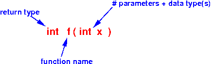

- Review :
function prototype
- The function prototype
specifies:
- The function's name
- The number and data types of parameters
- The return type
(omits the function body)
Example:
- Function definition:
int f(int x) { return(x*x); }The function prototype of f( ) is:

- The function prototype
specifies:
- Previously,
we have seen that a
variable
must be
declared (or defined)
before
it is used
(see:
click here)
extern int x; // Declare x int main( int argc, char *argv[] ) { printf("x = %d\n", x); } int x = 4; /* Definition of global var x */
-
$64,000 question:
- Will this rule apply for
functions ???
I.e.:
- Does a function need to be defined or declared before it ise used ???
Answer:
- No !!!
For some strange reason, Kernighan and Richie (designers of C) made their original C compiler assume a default function type if the function is not defined
(I read long ago that Kernighan and Ritchie designed C to write the UNIX operating system and the functions in this operating system mainly have int typed parameters and returned int typed return values
So they made the C compiler assume int typed parameters and return value to expediate the program development of UNIX...)
This practice of making the C compiler assume about the data types of parameters of an undefined function has been preserved in the C programming language (maybe to accomodate older C programs)
- Will this rule apply for
functions ???
- The C99 standard
(
click here)
specifies the following
default argument (= parameter)
promotion rule:
- If the expression that denotes the called function has
a type that
does not include a (function) prototype,
the
integer promotions
are performed on
each argument, and
arguments that have
type
float
are promoted to
double.
These are called the default argument promotions.
(See page 71 in the C99 standard)
Let me rephrase this rule to make it easier to understand:
- When a function is
used before the
function is
defined or declared,
the C compiler will
use the data type(s) of
the parameters of the
function to
construct the function prototype.
- The C compiler
will make the
following assumptions
about the
data type(s) about
a parameter type
when the function is
not defined or declared
before it is
used:
data type of the passed variable | C compiler assume this parameter type -----------------------------------+---------------------------------------- (unsigned) char, short, int | int float, double | double
- The return data type of an undefined or undeclared function is (always) assumed to be int
Example:
- Suppose you write the
following function call:
short x; int y; float z; .... = f( x, y , z ) ;
When the C compiler processes the function call f( x, y, z ), the C compiler will assume that the function prototype for f( ) is:
int f ( int x, int y, double z ) { ... }
- If the expression that denotes the called function has
a type that
does not include a (function) prototype,
the
integer promotions
are performed on
each argument, and
arguments that have
type
float
are promoted to
double.
- Let's start with a
correctly written
C program:
#include <stdio.h> /* --------------------------------------------------- Function f( ) is defined before main's use of f( ) --------------------------------------------------- */ int f(int x) { return(x*x); } int main(int argc, char *argv[]) { short x = 2; // *** Short !! int y = 0; y = f(x); // Compiler needs to convert short x --> int and pass to func printf("x = %d, y = %d\n", x, y); }The function f( ) is defined before it was used
Therefore:
-
The C compiler knows the
data types of the
parameters when it
processes the
function call f(x).
- Because the C compiler knows exactly what type of data it need to pass to the function f( ), the C compiler can (and will) convert the data if necessary !!!
This program will compile without any error or warnings
-
The C compiler knows the
data types of the
parameters when it
processes the
function call f(x).
- Example Program:
(Demo above code)

- Prog file: /home/cs255001/demo/C/set1/impl-declare1.c
How to run the program:
- To compile: gcc impl-declare1.c
- To run: ./a.out
- Now consider the
following C program where
we
define
the function f( )
after its
use in main( ):
#include <stdio.h> int main(int argc, char *argv[]) { short x = 2; // *** Short !! int y = 0; y = f(x); // C compiler will assume: int f(int x) !!! // Compiler will convert short x --> int and pass to func !! printf("x = %d, y = %d\n", x, y); } /* --------------------------------------------------- Function f( ) is defined AFTER main's use of f( ) --------------------------------------------------- */ int f(int x) { return(x*x); }The function f( ) is defined after it was used !!!
Therefore:
- When
the C compiler processes
the function call f(x),
the C compiler does
not know
how to pass the parameters !!!
(The C compiler has no information on the function f( )
At this moment, the compiler for most programming languages will signal an error, but C behaves differently)
- Instead of stopping, the
C compiler will
make this assumption for
the function f( ):
int f( int x ) { ... }prints a warning and continues the translation !!!
Here's the compiler's message:
cs255-1@aruba (4837)> gcc impl-declare2.c impl-declare2.c: In function 'main': impl-declare2.c:9:8: warning: implicit declaration of function 'f' [-Wimplicit-function-declaration] y = f(x); // **** Call f( ) **** ^The compiler issues a warning but there is no (fatal) error !!!
The compilation is successful !! (You can run the program !!!)
The program will run correctly:
cs255-1@aruba (4840)> a.out x = 2, y = 4
- When
the C compiler processes
the function call f(x),
the C compiler does
not know
how to pass the parameters !!!
- Example Program:
(Demo above code)
- Prog file: /home/cs255001/demo/C/set1/impl-declare2.c
How to run the program:
- To compile: gcc impl-declare2.c
- To run: ./a.out
- Explanation:
- When the C compiler reaches
this line in the program
during the translation process:
int main(int argc, char *argv[]) { short x = 2; // **** short int y = 0; y = f(x); // **** Call f( ) **** <------- Compiler reaches here printf("x = %d, y = %d\n", x, y); } /* --------------------------------------------------- Function f( ) is defined AFTER main's use of f( ) --------------------------------------------------- */ int f(int x) { return(x*x); }the C compiler did not find the function definition or declaration yet.
Therefore, the C compiler will perform the default argument promotion
Because the input parameter x is a short, the C compiler will make the following assumption:
int f( int x )will convert short x to an int represention before passing the parameter.
Also, the C compiler will:
- Print a warning message
that it has
made an implicit function declaration
(= an assumption)
This warning will help the programmer debug his/her program in case the execution goes wrong (it can happen in multi-file C programs)
The C compiler will continue with the program translation
- Print a warning message
that it has
made an implicit function declaration
(= an assumption)
-
When
the C compiler reaches
this line in the program
during the translation process:
int main(int argc, char *argv[]) { short x = 2; // **** short int y = 0; y = f(x); // **** Call f( ) **** printf("x = %d, y = %d\n", x, y); } /* --------------------------------------------------- Function f( ) is defined AFTER main's use of f( ) --------------------------------------------------- */ int f(int x) <------- Compiler reaches here { return(x*x); }The C compiler will verify if the assumption was correct
It was correct in this case
(If the C compiler fails to verify the assumption, it will print an error and abort !!!)
- When the C compiler reaches
this line in the program
during the translation process:
- To show you that
the C compiler will
abort when the
default parameter type assumption's
verification fails,
consider this
C program where the
definition
of f( ) is
changed:
#include <stdio.h> int main(int argc, char *argv[]) { short x = 2; // *** short !!! int y = 0; y = f(x); // Assumes: int f(int x) printf("x = %d, y = %d\n", x, y); } /* --------------------------------------------------- Function f( ) is defined AFTER main's use of f( ) --------------------------------------------------- */ int f(short x) { return(x*x); }The compiler error message is:
cs255-1@aruba (4845)> gcc impl-declare3.c impl-declare3.c: In function 'main': impl-declare3.c:9:8: warning: implicit declaration of function 'f' [-Wimplicit-function-declaration] y = f(x); // C compiler will assume: int f(int x) ^ impl-declare3.c: At top level: impl-declare3.c:24:5: error: conflicting types for 'f' int f( short x ) ^ impl-declare3.c:25:1: note: an argument type that has a default promotion can't match an empty parameter name list declaration { ^ impl-declare3.c:9:8: note: previous implicit declaration of 'f' was here y = f(x); // C compiler will assume: int f(int x) ^Explanation:
- Because the C compiler had
assumed that
the function f( ) is:
int f ( int x )when the C compiler processes the actual function definition for function f( ):
int f( short x ) { return(x*x); }the C compiler discovers a conflicting type information
When this happens, the C compiler will print the error and abort !!!!
- Because the C compiler had
assumed that
the function f( ) is:
- Example Program:
(Demo above code)
- Prog file: /home/cs255001/demo/C/set1/impl-declare3.c
How to run the program:
- To compile: gcc impl-declare3.c
- To run: cannot be run
- Common sense rule:
- Always
declare a
function
before you call (use)
the function !!!!
(Just like you must declare a variable before you can use it !!!)
We discuss how to declare a function next....
- Always
declare a
function
before you call (use)
the function !!!!